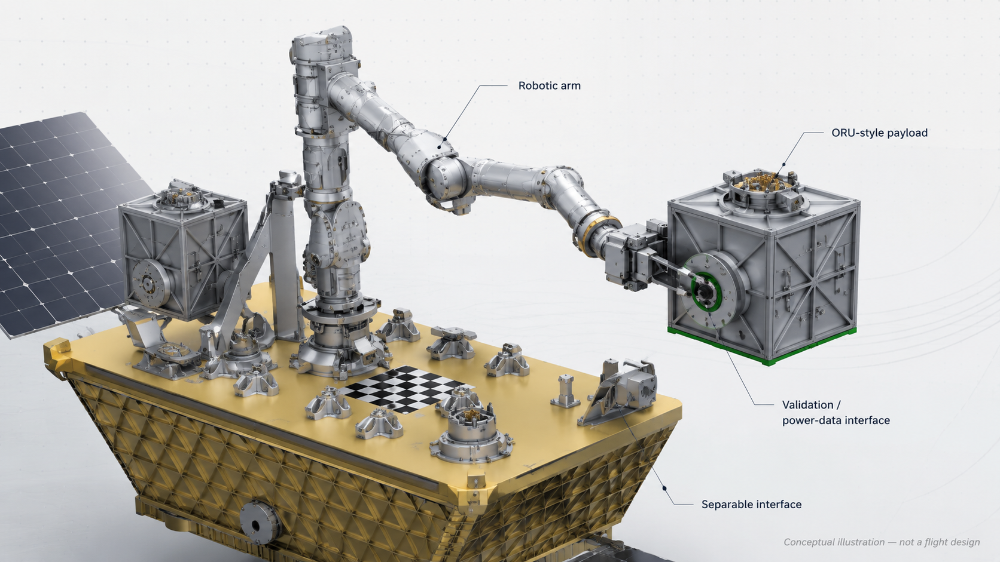

Independent · Prospective Team · ISAM Payload Concept
Forming an Independent Team for NASA TechLeap's Robotically Manipulated Payload Challenge
Building a prospective application around a robotic servicing / manipulation validation payload for low Earth orbit.
I'm assembling a small, multidisciplinary team to develop a concept-stage application for the NASA TechLeap Robotically Manipulated Payload Challenge. The working concept is a compact payload designed to demonstrate repeatable robotic manipulation tasks such as grapple/release, relocation, alignment verification, reinstallation, inspection support, and simple power/data validation.
The Challenge
NASA TechLeap's Robotically Manipulated Payload Challenge invites applicants to propose payloads that can interact with, be manipulated by, or be reconfigured by a robotic arm in low Earth orbit. The challenge is focused on advancing persistent infrastructure for in-space servicing, assembly, and manufacturing.
All dates, eligibility rules, technical requirements, insurance requirements, and award details should be confirmed against the official challenge materials.
Working Concept: Robotic Servicing Validation Payload
The proposed concept is a compact ORU-style robotic servicing validation payload. The goal is to demonstrate repeatable robotic manipulation tasks that support future modular spacecraft, servicing, inspection, and upgradeable orbital infrastructure.
- Robotic grapple and release
- Payload relocation
- Alignment verification
- Reinstallation or reseating
- Visual fiducial inspection support
- Simple power/data validation
- Repeatable manipulation cycles
- Telemetry or observable success criteria

The design image is only conceptual and will be refined by the team based on official technical constraints, spacecraft interface requirements, mass/power/thermal limits, safety rules, and team expertise.
Why This Matters
Future spacecraft and orbital platforms will need to be serviceable, modular, inspectable, and upgradeable. A small manipulation-focused payload can help demonstrate practical steps toward robotic servicing, assembly, modular payload swapping, and maintainable space infrastructure.
- Supports ISAM development
- Demonstrates modular payload handling
- Creates measurable robotic manipulation success criteria
- Builds experience around flight-payload requirements
- Creates a credible portfolio project even if the application is not selected
Who I'm Looking For
I'm looking for collaborators, advisors, or mentors with one or more of the following skill areas:
- Mechanical / aerospace engineering
- Electrical / embedded systems
- Robotics / controls / manipulation planning
- CAD / mechanical design
- CNC machining, welding, fabrication, or rapid prototyping
- Space systems / payload integration
- Thermal / power / mass budgeting
- Spaceflight materials, launch vibration, thermal/vacuum, or environmental test experience
- Payload operations / CONOPS / flight-test planning
- Flight hardware / test planning experience
- Faculty, advisor, or industry mentor support
Students, early-career professionals, career switchers, experienced engineers, faculty, industry mentors, and advisors are welcome if they can contribute meaningfully and meet the official challenge eligibility requirements.
About the Organizer
I'm Dan Lee-Odinson, an HCM implementation specialist and returning Space Studies student building a transition path into the space industry. My background is in systems implementation, client-facing technical project work, requirements coordination, workflow design, training, documentation, budget-sensitive implementation planning, and AI-assisted research/development.
For this challenge, I plan to support the team as project lead and proposal/application coordinator: organizing the application package, project plan, budget, documentation, timeline, team coordination, requirements tracking, and submission workflow. I'm seeking technical collaborators and advisors to help define, validate, and mature the payload concept.
Near-Term Timeline
- Now – July 10, 2026 Core team recruiting and initial contributor conversations
- By mid-July 2026 Core team selection, concept refinement, roles, and application plan
- Late July 2026 Technical review, budget/risk planning, and application drafting
- July 29, 2026 RMPC registration deadline
- August 12, 2026 Phase 1 application deadline
- After selection, if awarded Development proceeds according to official challenge phases, funding, rules, technical constraints, and team agreement
Core team consideration is targeted for July 10, 2026. Advisor, reviewer, or backup contributor interest may still be reviewed after that date if needed.
Compensation and Prize Disclaimer
This is an unpaid, volunteer team-forming opportunity for a prospective NASA TechLeap Robotically Manipulated Payload Challenge application. Participation does not guarantee selection, prize funding, reimbursement, employment, or future compensation.
If the team is selected for an award, any prize distribution, reimbursement, or project-related compensation will be handled according to a written team agreement and pre-determined distribution strategy established before submission or award acceptance.
Eligibility and Insurance Notice
The official challenge materials include insurance or demonstrated financial responsibility requirements for potential winners, including minimum liability coverage requirements. The team will need to confirm the timing, coverage path, and responsible party before award acceptance or participation beyond the application stage.
Please do not share sensitive personal information on the interest form. The form does not ask for government ID or confidential identifying information — only review the official rules to confirm your own eligibility.
Interested in Joining or Advising?
If this project aligns with your skills or interests, complete the interest form below. I'll review responses and follow up with potential contributors whose skills, availability, and eligibility appear aligned with the application timeline.
Core team consideration is time-sensitive. The Phase 1 application deadline is August 12, 2026.